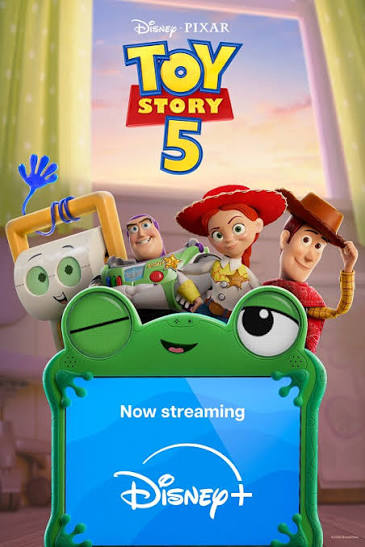
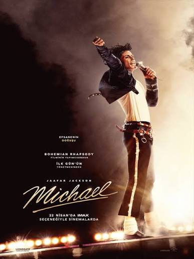
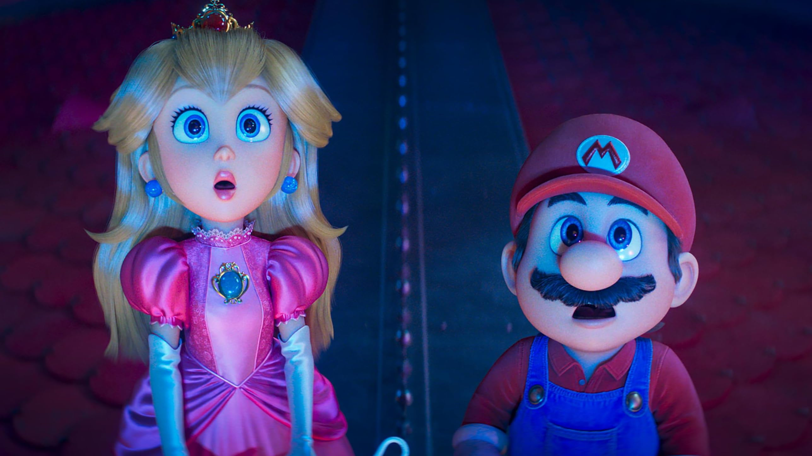
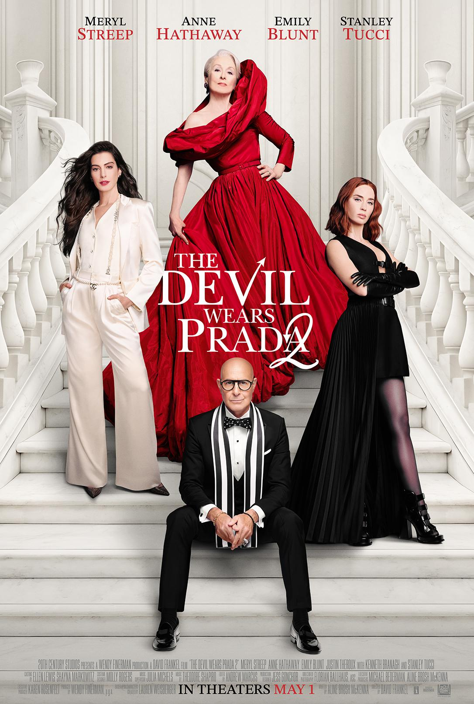

2026 Yılında Dünya Genelinde En Çok İzlenen 6 Sinema Filmi:
Spider Man Brand New Day
2026 yılında en çok seyirciye ulaşan filmlerin başında Spider Man Brand New Day geliyor 2.52 milyar dolar gişe hasılatıyla tüm zamanların en çok kazanan 3.filmi oldu.
The Odyssey

Film Truva Savaşı'nın sona ermesinin ardından İthaka Kralı Odysseus'un vatanına dönmek için verdiği 10 yıllık mücadeleyi konu alır. Ayrıca film tüm zamanların en çok hasılat yapan R-rated (18+) ve IMAX filmi unvanını aldı.
Toy Story 5 (Oyuncak Hikayesi 5)

Oyuncakların, günümüz çocuklarının vazgeçilmezi haline gelen modern teknoloji, akıllı tabletler ve elektronik aletlerle mücadelesini konu alır.Film, Kuzey Amerika'da 160 milyon dolar ile açılış yaparak serinin en iyi açılış rekorunu kırdı. Küresel gişede toplam 1,1 milyar dolar hasılat elde ederek büyük bir başarıya ulaştı.
Michael

Michael Jackson'ın çocuk yaşta ailesiyle kurduğu Jackson 5 ile başlayan müzik serüvenini ve dünyaca ünlü bir süperstara dönüşümünü ele alır. Bu biyografi filmi sinema tarihinin en çok hasılat yapan biyografi filmi oldu.
The Super Mario Galaxy Movie

he Super Mario Galaxy Movie, 2026 yılında dünya genelinde 1.01 milyar dolar hasılatı aşarak yılın en büyük animasyon hitlerinden biri oldu. Film, 2023 yapımı ilk Süper Mario Kardeşler Filmi'nin yakaladığı küresel başarının ardından çıtayı daha da yukarı taşıdı.
The Devil Wears Prada 2

The Devil Wears Prada serisi, yüksek moda dünyasının ışıltılı ama acımasız arka planını, kariyer basamaklarını tırmanmaya çalışan genç bir kadının ve onun korkutucu yöneticisinin gözünden anlatır. Serinin ilk filmi Haziran 2006'da vizyona girmiştir. Aradan 20 yıl geçmesine rağmen serinin devam filmi 2 kat hasılat elde etmiştir.
Özetle: 2026 yılında dünya çapında 5 film 1 milyar doları aşmasıyla sinema dünyasında bir geri dönüş yaşandı. Peki sizin en sevdiğiniz hangisi oldu?